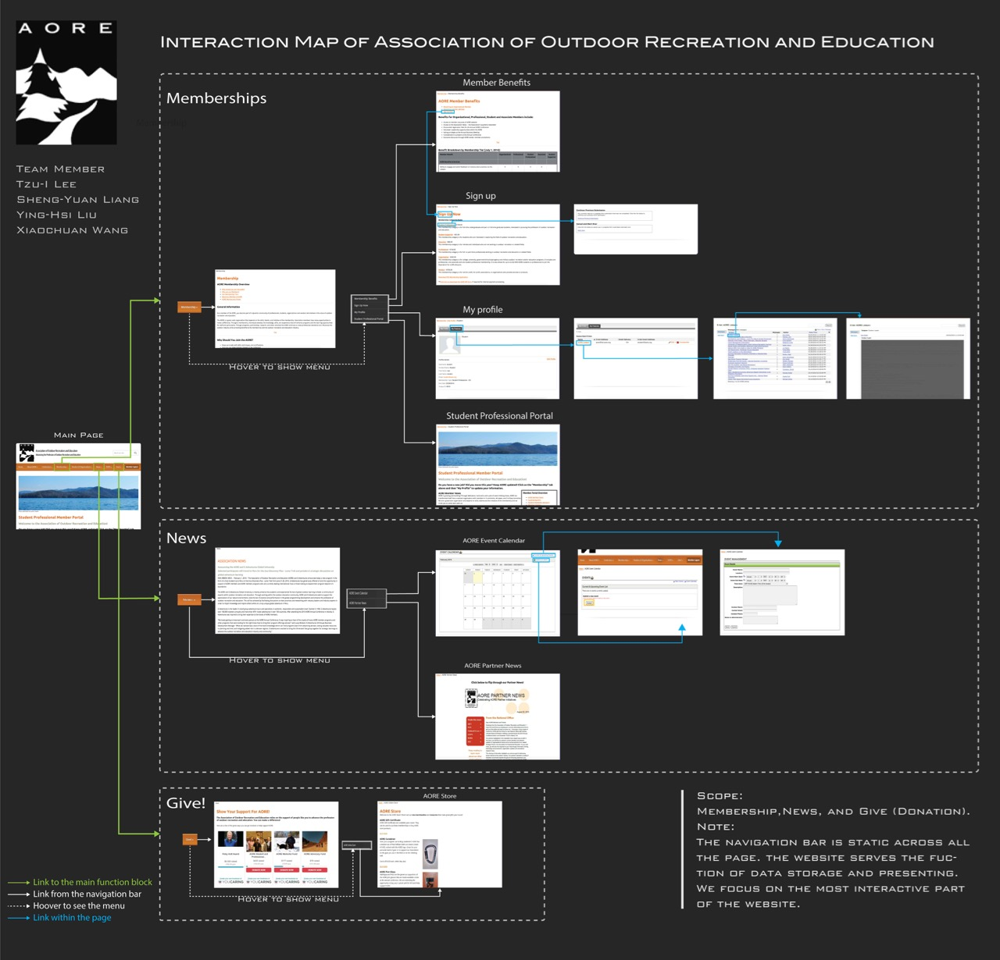

The Association of Outdoor Recreation and Education is an association that provides services to professionals and students in the field of outdoor recreation and education. The organization will adopt a new system in April. In order to improve their website interface, they asked our group to find out the user’s thoughts and needs.
Dec. 2015 - Mar. 2016
My Role: UX Researcher
Project Manager
Usability Evaluation
Needs Assessment
Interaction Map
Interview
Survey
Based on the clients’ Information, we focused on three main interactive functions of the AORE website, which are Membership, News, Give.
In this project, we tried to focus on the users’ needs rather than the features of the AORE website. We interviewed 3 current users and 2 potential users, and discovered many discrepancies between the stakeholder’s expectation and the user’s needs.
We summarized three key findings after the interviews:
We conducted a comparative analysis to explore the possible solutions for the needs we discovered in the interviews. Our group brainstormed to further filter out our final list of competitors, and we tried to increase the diversity of the competitors. The seven competitors are listed below:
Suggestion: AORE’s website should have reasonable information prioritization to make full use of the limited space.
Suggestion: The search bar on AORE’s website should be redesigned to make it more visible to the users.
Suggestion: AORE could use more images and text modifications to highlight important information.
Suggestion: AORE could identify the links that are more important to users in every page and extract those links from the text.
Suggestion 5.1: AORE website can consider additional functions such as online forum and online private message between members.
Suggestion 5.2: In addition to adding more networking functions, AORE can also emphasize the function of networking in their design.